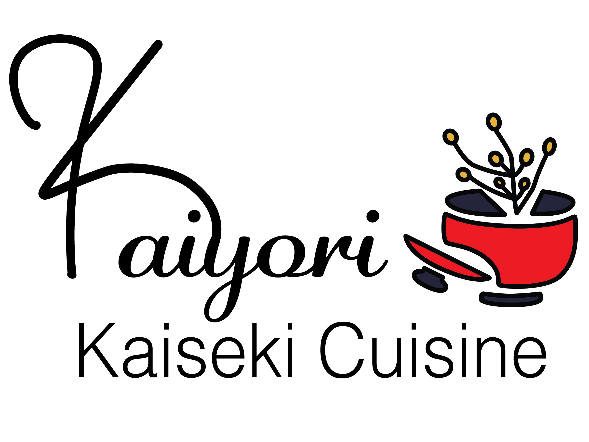
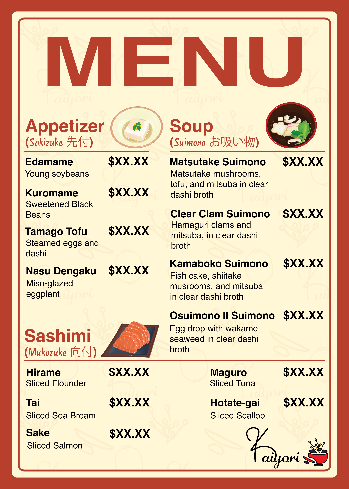
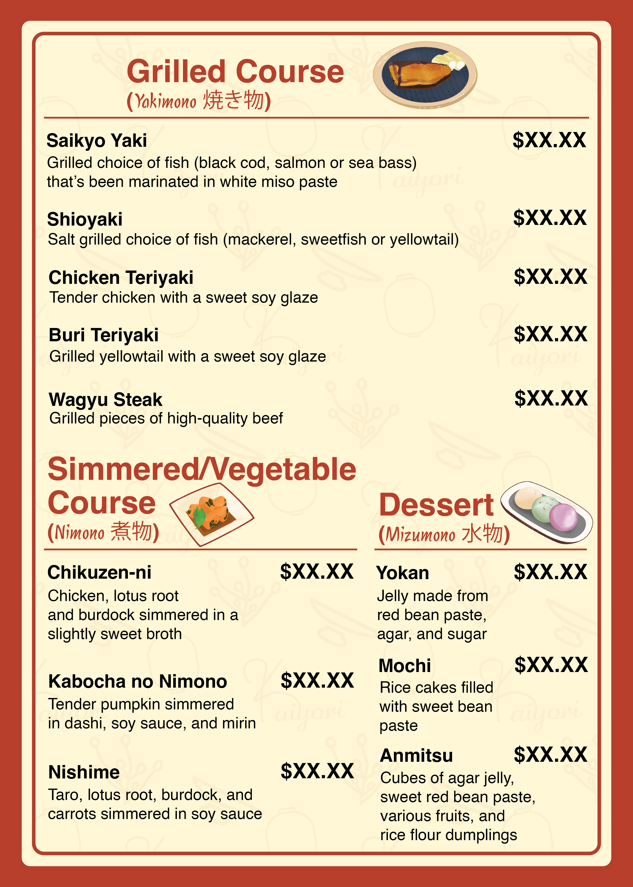
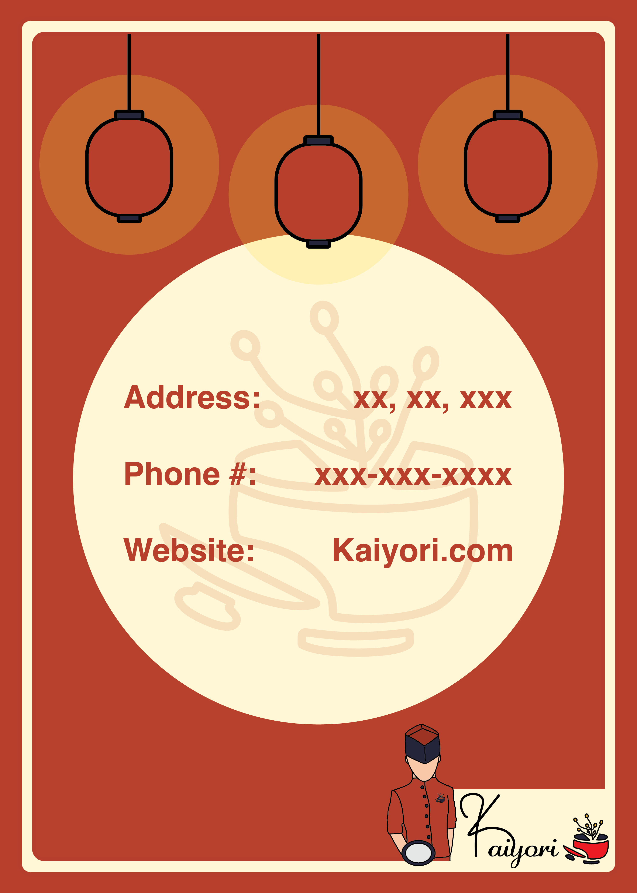
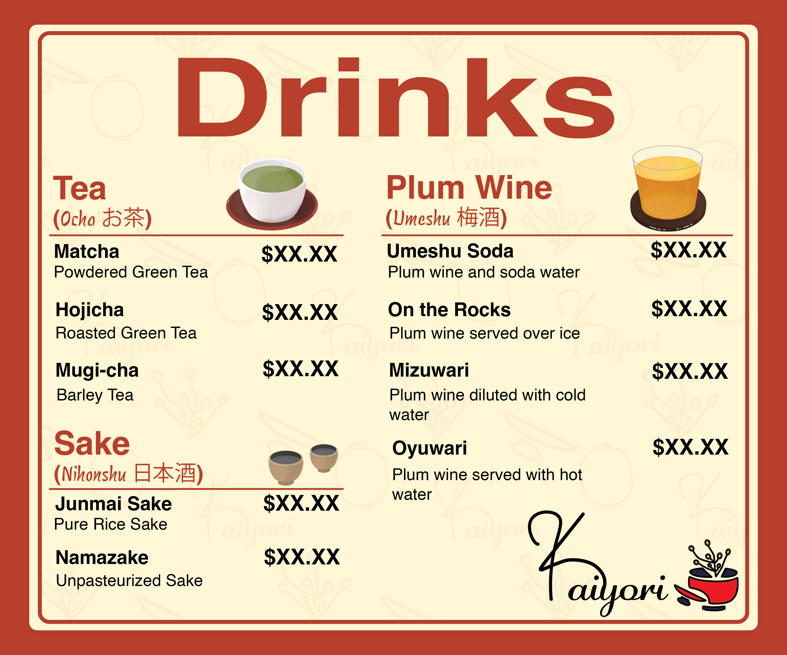
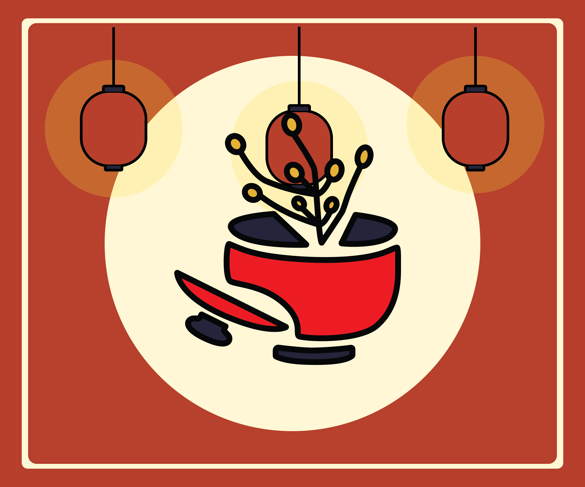
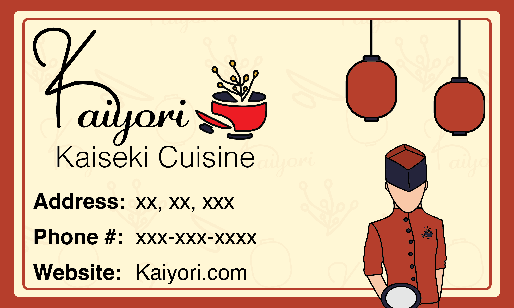
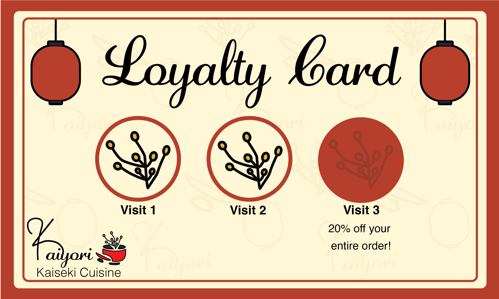
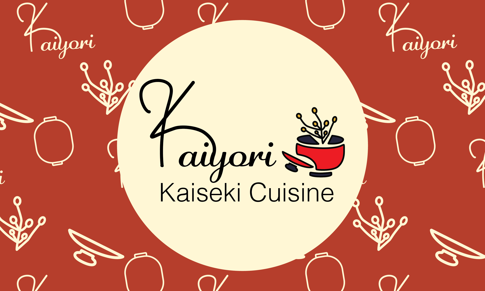
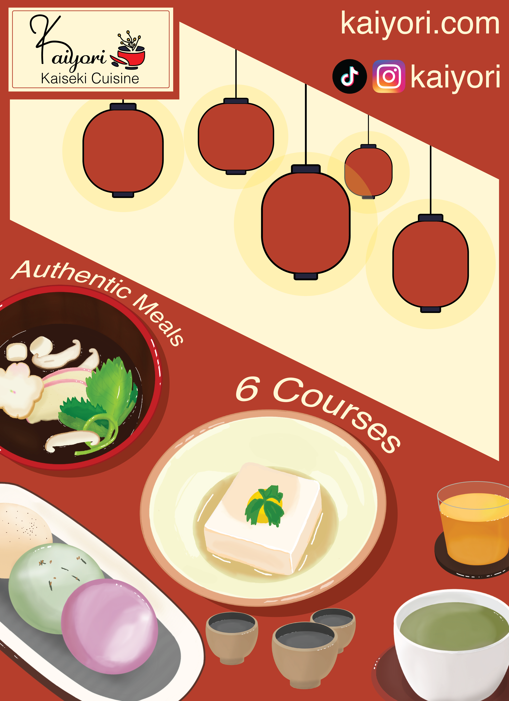

Drafting the Logo
Intitial Sketches
For the logo, I tried initially sketcing s more playful take on the logo to be ‘friendly’, but I realized that I wanted a more traditional approach to the logo design, while still being modern to match the brand's personality.
Final Sketch
Eventually, I was able to create a sketch that appears modern yet traditional, and still looks friendly to potential customers. The logo is a rice plant, or 'Oryza sativa', ectruding out of a soup bowl with the lid on the side, to convey the art of traditional cooking.
Logo Design
Logo Typography
To make the name bold to stand out more, I drew out a unique 'k' design that makes the logo all the more recognizable. As for the typography, I used a script font adagescriptJF, and helvetica to portray a combination of tradition and modern.
Overall Design
The final design portrays elements and colors that makes it bold and resonating, with soft touches that make it comforting and friendly, adhering to the brand.

Logo Flexibility & Variations
A logo system was created for the logo to fit different forms of media and print, especially for the menu and advertisments. The logo and alternative logo is compatible to work against different colors.
Food Menu Design
Food Menu Sketch
For the cover of the food menu, I wanted to convey the hospitality of Kaiyori through the sketch I created of a chef serving a dish.

Food Menu Cover Draft
For my first draft of the menu, I realized that it was greatly lacking color and striking elements to make it memorable and bold. I also wanted to properly incorporate the logo in a way that it stands out.

Food Menu Cover Final Draft
The final draft of the menu properly conveys the title, with striking bold elements to make it a unique menu cover. It also conveys the cohesive color palette of the brand, with the addition of portraying the restaurant's hospitality.

Food Menu Inside Pages
I used procreate to draw a meal option for each section, to add creativity to the menu. The brand's pattern is also slightly visible for an artistic touch.


Food Menu Back
The back cover displays important information about the restaurant, with design elements being cohesive to the front page.

Drinks Menu Design
Drinks Menu Front & Back
The separate drinks menu incorporates the same design techniques as the food menu.


Card Designs
Business Card
The Kaiyori business card incorporates the pattern and menu design elements to match the brand's cohesiveness. The business card can be handed out to customers or potential business partners.
Loyalty Card
The loyalty card is a great way to have customers revisiting the restaurant to dine and receive discouts in return. The card is easily adaptable to change the restaurant's rewards.
Card Backs
Both cards have the same back design, displaying the name of the brand and the pattern.



Advertising the Brand
Illustrative Poster
The illustrative poster was designed to easily stand out to viewers using the design elements and illustrations of the brand. The poster also has the social media and website of the brand.

Posters/Social Media Posts
These set of posters are easily adapatable for physical and digital use on social media, advertising the brand and new additions to the restaurant.